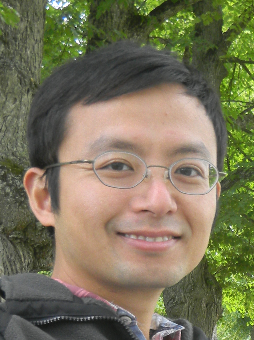

 胡煜成 | Yucheng Hu
清华大学周培源应用数学中心
Zhou Peiyuan Center of Applied Mathematics
Tsinghua University, 100084, P.R. China
Email : huyc@tsinghua.edu.cn
简历 | Brief CV
2001-2005 B.S. Beijing University
2005-2010 Ph.D. Beijing University,
Supervisor Dr. Tiejun Li.
2010-2012 Postdoc at University of California, Irvine
2012-present Zhou Pei-yuan Center for Applied Mathematics
研究 | Research
I am interested in the modeling and simulation of complex systems
originated from system biology, traffic flow and material science.
Computational system biology
The cell is like a delicated and complex machine.
With the help of stochastic modelling
and simulation, I want to understand
the regulation mechanism behind the complex
process from genetic regulation within single cell to celluar
communication and decision making.
Traffic forecasting
Traffic flow of a city is a complex and dynamic system.
With the availability of big data collected from cars on road,
we want to understand the general mechanism of how traffic system
works and to forecast and control the car flow.
Liquid crystals
Complex fluids, such as liquid crystals and polymers, can form into many novel structures and can be used to
make materials with extrordinary properties. To design such materials,
it is important to be able to predict these structure using good models and efficient computational
methods. Because liquid cyrstals are the most simple complex fluids,
we use it as a model system to understand complex structures, especially defects.
论文 | Publications
Yucheng Hu,
Hao Liu,
Minwei Li,
Huizhuo Yuan,
and Tiejun Li,
Data Condensation in Large Scale Origin-Destination Generation, submitted.
Yucheng Hu,
Minwei Li,
Hao Liu,
Xiaolu Guo,
Xiaowei Wang,
and Tiejun Li, City Traffic Forecasting Using Taxi GPS Data:
A Coarse-grained Cellular Automata Model, submitted.
Yucheng Hu and Gongrong Yang,
Sequence Evolution under Constraints: Lessons Learned from Sudoku,
Journal of Computational Biology, 23(10), pp.830, 2016.
Yucheng Hu and John Lowengrub,
Collective Properties of a Transcription Initiation Model under Varying Environment,
Journal of Computational Biology, 23(1), pp. 56-66, 2016.
Yucheng Hu, Yang Qu and Pingwen Zhang,
On the disclination lines of nematic liquid crystals,
Comm. in Comp. Phys., Communication in Computational Physics，19, pp 354， 2016.
Yucheng Hu, Yang Qu and Pingwen Zhang,
Disclination lines of liquid crystals confined in cylinder (in Chinese),
Sci. Sin. Math., 2015, 45: 1249–1264, doi: 10.1360/N012014-00237.
Yucheng Hu and Tianqi Zhu,
Cell growth and size homeostasis in silico,
Biophys. J., 106.5 (2014), 991-997.
Yucheng Hu, Assyr Abdulle and Tiejun Li,
Boosted hybrid method for solving chemical
reaction systems with multiple scales
in time and population size,
Commun. Comput. Phys.,
12 (2012), 981-1005.
Tianqi Zhu, Yucheng Hu, Zhiming Ma,
Dexin Zhang, Tiejun Li, and Ziheng Yang,
Efficient simulation
under a population genetics model of carcinogenesis
, Bioinformatics, 27 (2011), 837.
Yucheng Hu, Tiejun Li and Bin Min,
A weak second order tau-leaping method
for chemical kinetic systems,
J. Chem. Phys., 135 (2011), 024113.
Yucheng Hu, Tiejun Li and Bin Min,
The weak convergence analysis of tau-leaping methods: Revisited,
Comm. Math. Sci., 9 (2011), 937-964.
Assyr Abdulle, Yucheng Hu and Tiejun Li,
Chebyshev methods with discrete noise: the τ -ROCK
methods, J. Comp. Math., 28 (2010), 195-217.
Yucheng Hu and Tiejun Li,
Highly accurate tau-leaping methods with random corrections,
J. Chem. Phys., 130 (2009), 124109.
Yucheng Hu, Xiang Peng, Tiejun Li and Hong Guo,
On the Poisson approximation to photon
distribution for faint lasers, Phys. Lett. A, 367 (2007), 173-176.
Wang Ming, Xu Jinchao and Hu Yucheng,
Modified Morley Element Method for a
Fourth Order Elliptic Singular Perturbation Problem,
J COMPUT MATH, 24 (2006), 113-120.